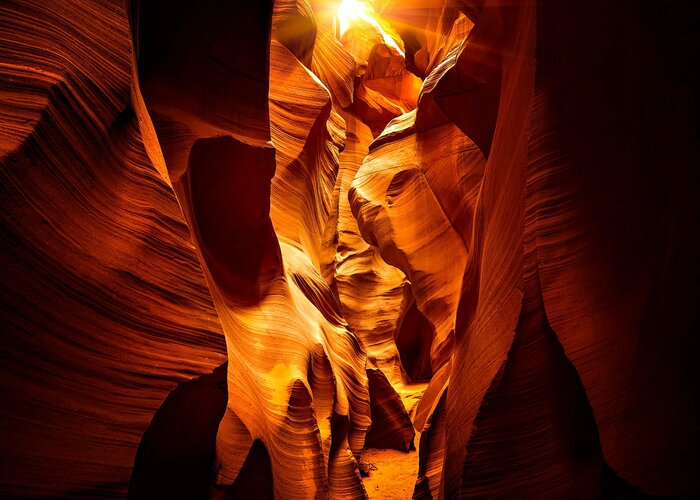

High Adventure
Sedona Jeep Tours
Sedona is one of the most beautiful cities in Arizona, with its rich history and breathtaking red rock views. There are many companies that offer jeep and hummer tours, where they will have a professional driver take your group out into the rugged terrain to see the many views that Sedona has to offer. You can choose the type of terrain/trails you would like to explore, ranging from mild to extreme. Most trips will last about two hours and while the number of people allowed per group depends on the vehicle and company you book with, most often it is anywhere between 4-7 people.
Sedona Jeep Tours WebsiteBright Angel Trail
One of the many trails located in the Grand Canyon, this trail is said to be one of the more difficult ones, so be sure to properly prepare before attempting it. This 15.3-mile hike goes out and back, providing rocky terrain, little shade, and breathtaking views. It is common to see lots of other people on the trail, as it is popular for hikers, backpackers, and campers alike. It is important to note that dogs are not allowed on the trail, so be sure to leave any furry friends at home for this adventure.
Bright Angel Trail WebsiteAntelope Canyon
Located just a 10-minute drive east from Page, Antelope Canyon provides a truly once-in-a-lifetime experience. The canyon takes on a wave-like appearance, making it a popular tourist destination for its interesting views. There are many different tours available that go through both the upper and lower portions of the canyon, but it is important to be in shape and come prepared for the hikes ahead.
Antelope Canyon Tours Website